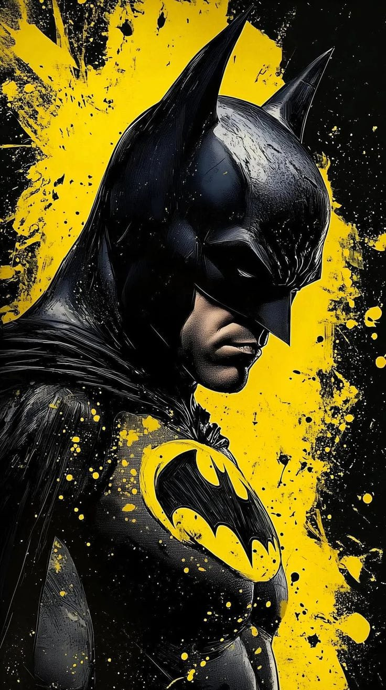
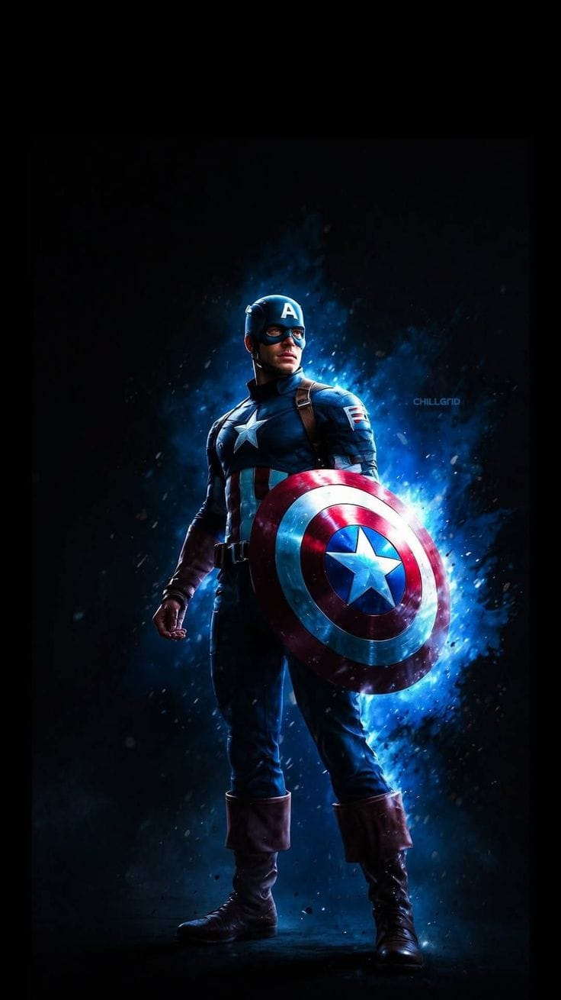

MEET THE LEGENDS
"YOUR HEROES ARE WAITING!"
Meet The Heroes - And Hear Their Stories !!!

Spider Man
Spider Man, also known as Peter Parker, is a Marvel Comics superhero created by Stan Lee and Steve Ditko.Bitten by a radioactive spider, Peter Parker gained incredible powers and became New York's friendly neighborhood Spider-Man. With his quick wit, spider-sense, and web-slinging abilities, he protects the city while balancing his personal life as a student
You can read more about him by clicking the link below!
Learn more about Spider Man

Bat Man
Batman, also known as Bruce Wayne, is a billionaire orphan who fights crime in Gotham City. After witnessing his parents' murder as a child, he dedicates his life to justice. With no superpowers, he relies on intellect, martial arts, and high-tech gadgets. Known as the Dark Knight, he symbolizes fear to criminals and hope to the innocent.
You can read more about him by clicking the link below!
Learn more about Bat Man
Iron Man
Iron Man, also known as Tony Stark, is a genius billionaire, inventor, and CEO of Stark Industries. After being injured and captured, he builds a high-tech suit to escape and later uses it to fight evil. With his armored suits and sharp mind, he becomes a founding member of the Avengers. His journey is one of redemption, leadership, and ultimate sacrifice for the greater good.
You can read more about him by clicking the link below!
Learn more about Iron Man

Captain America
Captain America, aka Steve Rogers, is a Marvel superhero transformed by the Super-Soldier Serum. With enhanced strength, agility, and durability, he fights for justice and freedom. Wielding a nearly indestructible vibranium shield, he leads teams like the Avengers and S.H.I.E.L.D. As a symbol of hope and patriotism, he inspires others to stand against evil
You can read more about him by clicking the link below!
Learn more about Captain America
Black Panther
Black Panther, aka T'Challa, is the king of Wakanda, a technologically advanced African nation. With enhanced abilities from the Heart-Shaped Herb and access to vibranium, he fights to protect his nation and the world. As a strategic leader and skilled warrior, he balances tradition and innovation. Black Panther's legacy extends beyond his kingdom, inspiring global change and unity.
You can read more about him by clicking the link below!
Learn more about Black Panther

Super Man
Superman, an iconic DC superhero, hails from Krypton and possesses incredible powers, including super strength, speed, and heat vision. Adopted by Jonathan and Martha Kent, he uses his abilities to protect humanity and fight for truth and justice. With his commitment to truth, justice, and the American way, Superman has become a symbol of hope and inspiration. As a founding member of the Justice League, he battles powerful villains and safeguards the world from threats both human and extraterrestrial
You can read more about him by clicking the link below!
Learn more about Super Man
Hulk
The Hulk, a gamma-irradiated mutant, possesses incredible superhuman strength, speed, and durability. Scientist Bruce Banner's transformation into the Hulk is triggered by intense emotions, particularly anger and stress. Despite struggles with rage and control, the Hulk fights to protect the innocent and battle powerful villains. With his immense power, he plays a complex role in the Marvel Universe, often walking the line between heroism and destruction. .
You can read more about him by clicking the link below!
Learn more about hulk
Thor
Thor, the Norse god of thunder, wields the mighty hammer Mjolnir and controls the elements with his incredible strength and lightning powers. As the prince of Asgard, he battles to protect the Nine Realms from threats both magical and cosmic. With his bravery and sense of honor, Thor fights alongside the Avengers, using his godly abilities to defend the universe. Mjolnir's power and Thor's unwavering courage make him a formidable hero in both Asgard and the mortal world..
You can read more about him by clicking the link below!
Learn more about Thor
2025 Superhero Universe || Created for fans to know about them
All these Character are Belong to DC Comics and Marvel
BY SANGEETHA